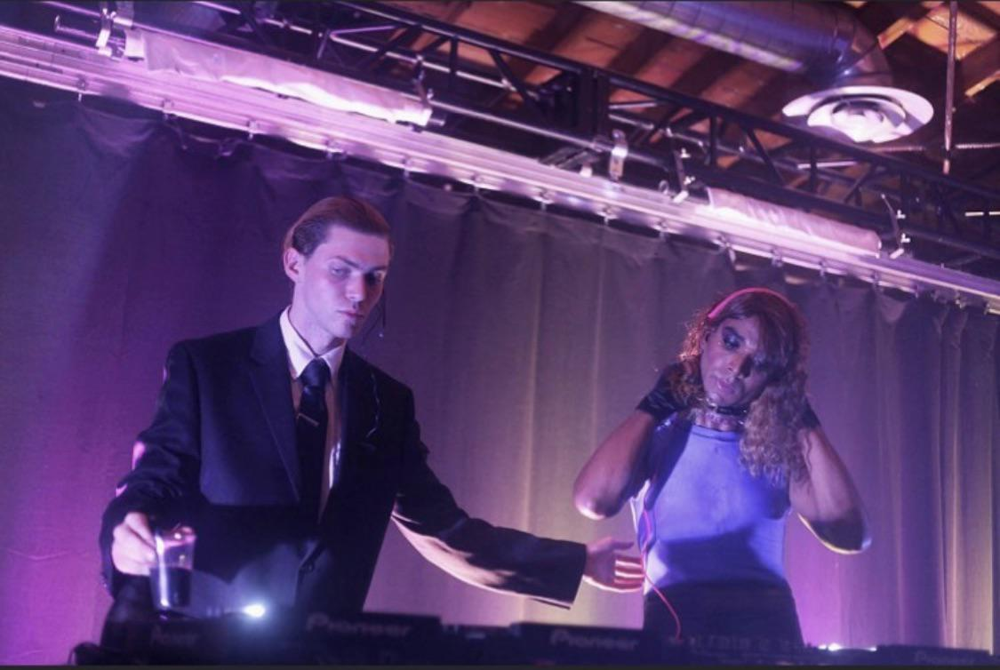

Assessment 2: Creative Project
Ref. no.: 202208970
Ref. no.: 202208970
SOPHIE or Sophie Xeon was a legendary British music producer, songwriter and DJ with a diverse discography. She came out as transgender through a music video of the single, ‘It's Okay to Cry’ in their Grammy-winning album ‘Oil of Every Pearl’s Un-Insides’. Her music has been described as experimental sound design, sugary synthesiser textures, featuring high-pitched vocals and drawing beats from genres like UK garage, mainstream pop and hip-hop. She was also known for her work with Charlie XCX (on the song ’Vroom Vroom’), Madonna (for ’Bitch, I’m Madonna’), Kim Petras and more.

SOPHIE passed away on January 30, 2021, in the early hours of the morning at her home in Athens. According to her management, she accidentally slipped and fell after climbing a roof to watch the full moon.
SOPHIE or Samuel Long was the second oldest of four siblings, and born on September 17, 1986, in Northampton. She was always obsessed with music along with their brother Ben. Their favourite artists included The Prodigy and the Pet Shop Boys. Her father took her to music festivals, playing rave cassettes in the car. She was given a keyboard at the age of 10, prompting her to make her own music. SOPHIE started making beats on a computer around the time she was 11. She would routinely sampling songs and even shared a story of sampling the sound of her mother’s friend answering the phone. She began DJing when she was a teenager, and would go out clubbing with her brother, Ben.
SOPHIE moved to Berlin for art school, subsequently joining a band called Motherland. The group released their music on Soundcloud and toured Berlin, the UK, and Amsterdam later between 2008-2009. The band released singles, two albums and featured music in a film called ‘Dear Mr/Mrs’, for which SOPHIE also made the score. SOPHIE has collaborated with bandmate Lutz-Kinoy, making music for performance art projects involving multiple media. Other members like Marcella Dvsi have featured in SOPHIE’s songs.
Some of the first tracks SOPHIE released on her Soundcloud was her remix of ‘A Certain Person’ by Light Asylum in 2010. The track was even featured on the CD release of Light Asylum’s EP ‘In Tension’. SOPHIE scored the film track of Dutch photography duo Freudenthal/Verhagen’s ‘Dear Mr/Mrs’. It was around this time that SOPHIE became affiliated with A.G. Cook’s label PC Music – described as forward-thinking by Vice – marking the beginning of many collaborations with Cook.
It was the years 2013 and 2014 that proved to be a period of new horizons for the artist. Releasing singles like ’Nothing More To Say’ and ’Bipp’, SOPHIE began to gain recognition in charts of popular music organisations. Around this time, she also wrote a song for famous J-pop singer, Kyary Pamyu Pamyu. Leaning into the ‘cute’ aesthetics SOPHIE seemed to subtly emulate in her projects, she also produced a single, ’Hey QT’, with A.G. Cook, featuring an advertisement for QT Energy Elixr, an energy drink. She released her second singles ’Lemonade/HARD’ in August 2014 both of which charted on music lists. Lemonade even featured in a 2015 advert for McDonalds.
SOPHIE was known to be an anonymous figure around this time in public, being described as a “faceless avatar” by TIDAL, staying away from interviews. At her Boiler Room set in Los Angeles, SOPHIE even sent rapper and drag artist Ben Woozy, dressed in a colourfully eclectic outfit, to mime her DJ performance while SOPHIE, having dyed her red hair blond, stood in a suit as a security guard.

It was the release of her debut album, ’Product’ that earned SOPHIE her notoriety. Released in November 2015, it was an 8-track compilation album with the physical version being made available in silicon bubble cases with a silicon product resembling a sex toy. She became a prominent producer in the US working with artists like Kim Petras, Madonna, Cashmere Cat and primarily producing Charlie XCX’s EP, ’Vroom Vroom’, the single ’After the Afterparty’ and even had cameos in music videos. The single for SOPHIE’s first studio album, ’It’s Okay To Cry’, released in October 2017, was the first time SOPHIE featured her own voice and image, publicly presenting as trans for the first time with her debut live performance later that month and a self-directed music video for single, ’Ponyboy’. The full album, called ’Oil of Every Pearl’s Un-Insides’ released on June 15, 2018, through SOPHIE’s own label MSMSMSM. It was nominated for the ‘Best Dance/Electronic Album’ at the 61st Grammy Awards.
In a Medium article written by SOPHIE’s ex-girlfriend, Greek trans activist and writer Tzef Montana talks about ‘The True Story Behind SOPHIE’s Identity’. The two met at a music video shoot for Charlie XCX’s ’After the Afterparty’ in 2016 and split up around 2019. Montana reveals that SOPHIE decided to “launch” her trans identity after Grimes said she was “pretending to be a girl” in a 2016 interview with the Guardian. Tzef claims she helped SOPHIE construct the image, supporting the artist’s public and private appearances. She recalls how SOPHIE would feel anxious presenting as female in public where the “persona wasn’t needed” – like a trip to the grocery store. She also talks about SOPHIE’s issues with over-consumption of drugs, incessantly working on music with no breaks, regular breakdowns before photo shoots or interviews. Montana outed SOPHIE’s identity via an Instagram Story in 2020 after their separation, with the Medium article being released after SOPHIE’s passing. Many of Montana’s claims were met with anger from SOPHIE fans. Many claimed she was lying about SOPHIE’s true identity, calling Tzef toxic. Others say the Medium article was written by AI with prompts from Montana.
SOPHIE’s death in 2021 came as a shock to the world. Artists like Rihanna, Charlie XCX, Sam Smith, FKA Twigs and more took to social media to offer their condolences. Fans across the world took to the internet to mourn the loss of an incredibly music artist. SOPHIE’s music has continued to remain relevant, shaping the pop and hyperpop genres with electronically produced synth sounds, distorted vocals with cutesy and feminine yet futuristic aesthetics. SOPHIE struggled with questions of identity, especially in terms of public versus private persona. Despite the discreet nature of SOPHIE’s personal life, Tzef Montana’s controversial article may reveal the artists’ private experiences that influenced SOPHIE’s music.
Her songs spoke of her feelings and desires, some acting as a lullaby to herself. Common themes of loneliness, desiring safety, and companionship, pleasure and kink – like in the song ’Ponyboy’ - all show up in her projects. As hinted in the lyrics of ’Immaterial’, “I was just a lonely girl in the eyes of my inner child/But I could be anything I want and no matter where I go”, many songs comfort the listener with words of acceptance. Many songs, however, are also a small window into SOPHIE’s deepest thoughts – with the lyrics “I’ve left my home…I feel alone” in ’Is It Cold In The Water’ or the song ‘Whole New World/Pretend World’, where SOPHIE tells a second person (or the audience) she can see a whole new world for both of them. Without details or complex writing, SOPHIE conveyed a feeling.
"I hope you don’t take this the wrong way but I think your inside is your best side.”
Lyrics from song 'It's Okay To Cry'.
Despite the “truth” revealed in Tzef Montana’s article, SOPHIE has undoubtedly made an impression on thousands (if not millions) of fans. Her battle with her own identity, a careful construction, reveals the fragile nature of gender performances in society. In times of restrictive perceptions regarding trans identity or even womanhood, SOPHIE broke barriers. Her art – albeit controversial – started discussions, conversations and criticisms of art, expression and public performance. SOPHIE made a profound impact on her fans, audience members and listeners, some of whom were prominent personalities in music, like her collaborators Madonna, Rihanna and Charlie XCX.
Earlier this month, on April 4, 2026, NME reported on a new fan-led online preservation project, documenting the life and career of SOPHIE. While the website is still being worked on, it already features live sets and videos as far back as 2010 until 2020, with plans to include links to her official releases, points of purchase, information on her discography as well as photoshoots and interviews. The site can be found at WHOLENEW.WORLD.